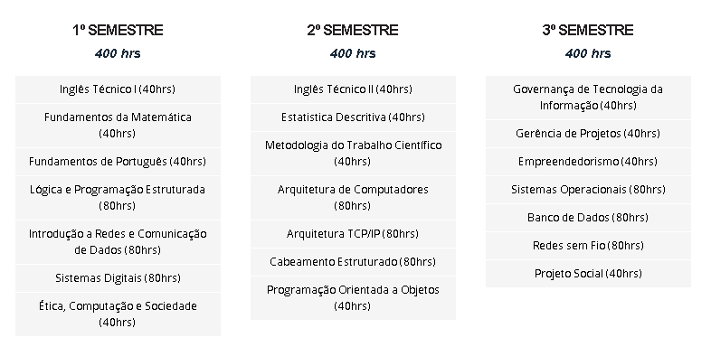
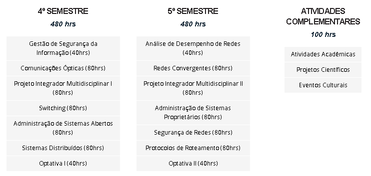
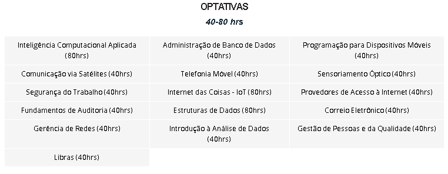
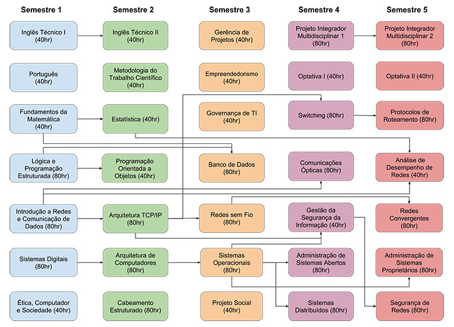

Matriz Curricular
A matriz curricular da Graduação Tecnológica em Redes de Computadores do IFCE campus Jaguaribe combina componentes curriculares teóricos e práticos para garantir a excelência na formação do profissional, além de trazer para a sala de aula os principais temas e tendências na área da Computação.



Fluxograma do Curso
